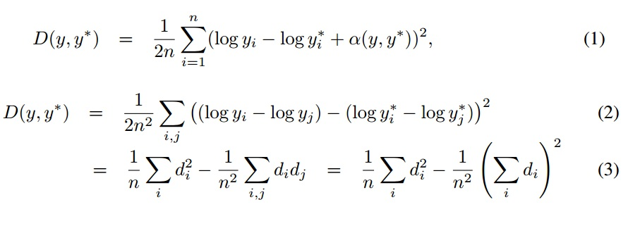

小组成员：李玉 王俊玉 谢鹏程
选题：深度估计与平面探测
阅读文献 Depth Map Prediction from Single Image using Multi-Scale Deep Network. in Proc. of NIPS, 2014.
Depth Map Prediction from Single Image using Multi-Scale Deep Network
文献总结与分析
1 概要
这篇文章采用深度学习的方法，利用多尺度卷积神经网络对单幅图像进行深度估计。网络分为两个部分，Global Coarse-Scale Network和Local Fine-Scale Network。作者先训练Global Coarse-Scale Network，用来预测场景的全局深度，确定参数，然后将Global Coarse-Scale Network的预测结果传递给Local Fine-Scale Network，将再训练Local Fine-Scale Network，根据Local Fine-Scale Network的局部信息（边缘轮廓，角点等）修改Global Coarse-Scale Network的预测结果。作者提出了尺度不变的均方误差函数，并在训练中采用了自己定义的误差函数。2 网络架构
2.1 Global Coarse-Scale Network有五个特征提取层，每层作卷积、最大池化操作，在五个卷积层后面链接了两个全连接层。如图1所示，第一层网络卷积核11*11，stride=4，2*2最大池化。第二层卷积核5*5，2*2最大池化，各层参数及图片大小在图中有详细标出。第一层的输入图片大小为304*228（NYU数据），第二个全连接层输出为74*55，得到的深度图比较模糊，缺少局部特征。
2.2 Local Fine-Scale Network
第一层作卷积和最大池化处理，提取边缘特征，第二层输入第一层的特征图和Global Coarse-Scale Network的输出，第三层第四层作卷积处理。第一层的输入图片大小为304*228（NYU数据），第二层输出为74*55，后面的卷积层保证输出图片大小不变。
2.3尺度不变误差函数利用预测深度值和实际深度值，提出了三种表征均方误差函数，见图2。

2.4 图像数据扩充
Scale： Input and target images的缩放比例s取(1,1.5),depth 除以s
Rotation： Input and target 旋转度数 r 取 [-5;5] degrees
Translation： 随机裁剪图片的大小（图1中标明）
Color： 每个像素点的值乘以一个(0.8,1.2)之间的随机数
Flips： 以0.5的概率水平翻转3 实验